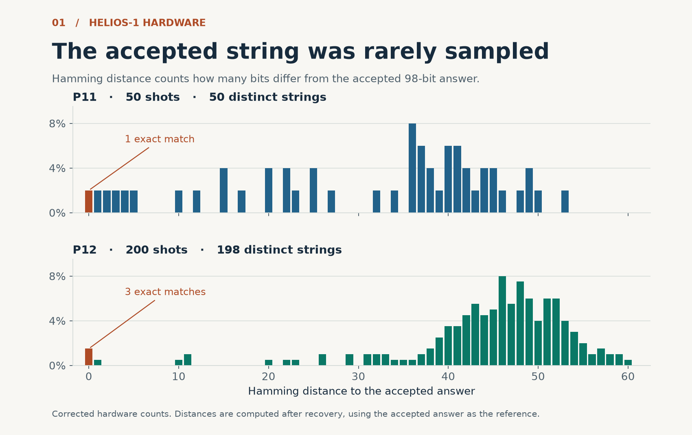
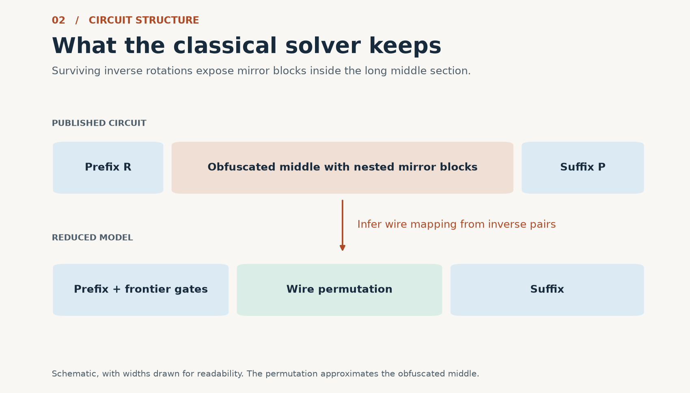
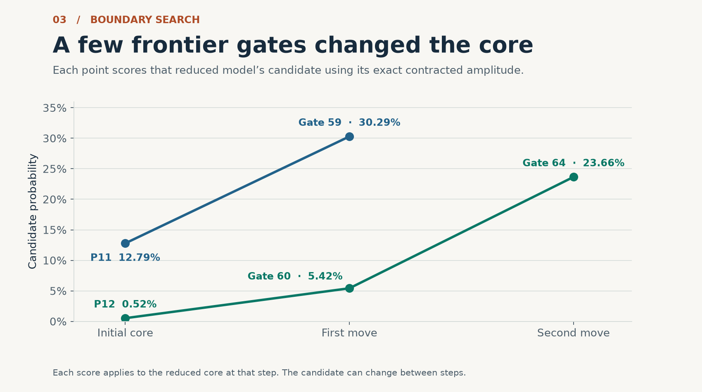
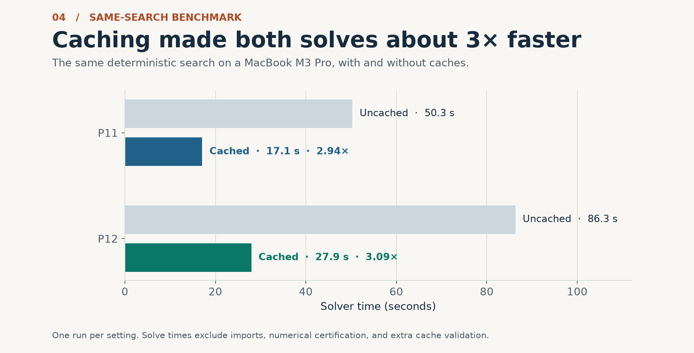

How We Recovered Two 98-Qubit Peaks
What noisy Helios-1 shots revealed about P11 and P12, and what a CPU found hidden in the circuit files
Every one of the 50 shots I analyzed for P11 was different. One of them was the right 98-bit answer. If I had ranked those shots by frequency alone, every string would have tied for first place.
That was the puzzle inside the BlueQubit Peaked Portal challenge. On Quantinuum Helios-1, I recovered the accepted bitstrings for P11 and P12 by looking for agreement across noisy measurements. Later, Dylan Neve’s qsim-lab recovered both answers from the circuit files on a CPU. The original tracker submission credits Dylan Neve and Claude (Anthropic). I reproduced that method and contributed a cache that qsim-lab adopted in its second solver. The two approaches found the same strings by looking for structure in different places.
What is a peaked circuit?
Run a quantum circuit, measure all 98 qubits, and you get one string of zeros and ones. The circuit defines a probability distribution over 2⁹⁸ possible strings. P11 and P12 were built so that the ideal distribution gives a hidden string unusually high probability. The challenge is to recover that string from the published circuit.
Each circuit has two kinds of structure. There is an output signal we can look for in repeated measurements. There is also a long obfuscated middle in the circuit itself. P11 has 1,999 two-qubit units and P12 has 2,457. The middle adds apparent complexity while leaving clues about how it was constructed.
On Helios-1, the signal was in the neighborhood
I analyzed 50 P11 shots at a reported cost of 282.98 HQC and 200 P12 shots at 1,373.4 HQC. Before decoding, I repaired the provider’s result framing. In P11, the parser produced 51 records, including a duplicated frame. In P12, five segment overlaps inflated the diagnostic count to 205. The raw output is preserved, and every valid shot after structural repair went into the analysis.

Figure 1. Corrected shots by Hamming distance to the accepted answer, measured after recovery. The orange bar marks exact matches.
Hamming distance counts the positions where two strings differ. The plot shows a small group of shots close to the answer and a much broader group farther away. P11’s accepted string occurred once. P12’s occurred three times and was its only repeated string. The nearby shots matter because each can preserve a different subset of the answer’s bits.
For the weighted observed medoid, I scored each observed string by its total Hamming distance to all shots, counting repeated strings each time they occurred. The observed string with the smallest total distance is the medoid. For cluster consensus, I used a local group of nearby strings and voted separately on each bit inside that group. Restricting the vote keeps distant shots from overwhelming the local signal.
Both decoders produced the accepted answer for P11. For P12, both agreed with the most frequent string, while a majority vote over all 200 shots differed from the accepted answer in 13 positions. The decoders used the shots alone and the portal provided the external check. The Quantum Advantage Tracker verified both hardware submissions. P11 hardware record · P12 hardware record
On a CPU, the clue was a mirror
qsim-lab’s solver starts with the published QASM and looks between controlled-Z gates. Some single-qubit rotations survive the obfuscation and appear again as their exact inverses, up to global phase. These pairs act as anchors. Following the anchors across the wires reveals nested forward-and-inverse blocks and gives a consistent mapping of the wires through them.

Figure 2. Inverse-pair anchors let the solver approximate the obfuscated middle by a wire permutation.
A circuit followed by its exact inverse cancels. If the wires are permuted between the halves and the mirror follows that permutation, the same idea lets you track the wire labels through the middle. The published circuits have residual operations, so qsim-lab uses the permutation as an approximation. What remains is a shallow model with roughly 280 two-qubit units. Its contraction is tractable because the circuit graph admits small intermediate tensors, even though it still has 98 wires.
The solver uses quimb and cotengra to contract the reduced model and find each bit’s marginal, the probability of seeing a zero or a one at that position. It joins the more likely bit from each marginal to get a candidate. Correlations can make that candidate different from the most probable joint string, so the solver contracts its amplitude directly to score it.
Where the boundary goes matters
Obfuscation can blur the boundary between the useful core and the middle. The search tests frontier gates that could belong in the core and scores the candidate for each trial. My reproduction’s stable search kept gate 59 for P11 and gates 60 and 64 for P12. P12’s candidate score rose from 0.52% to 5.42% and then 23.66%. P11 rose from 12.79% to 30.29%.

Figure 3. Candidate probabilities at each boundary move. Each point belongs to a different reduced model.
qsim-lab added boundary repair after an early P12 attempt missed four bits. The finished solver takes the QASM as input, and the answer comparison happens after the solve. My reproduction also numerically certifies the final modes of the reduced cores to a tolerance of 10⁻¹⁰. If a competing string flips a bit with a sufficiently small opposite-bit marginal, that marginal already bounds the competitor’s entire probability. Only the remaining ambiguous positions need explicit checks. That left one competing amplitude to check for P11 and 31 for P12.
The certificate and probabilities apply to the reduced model. The full circuit retains the residual operations that the permutation approximation leaves out.
What I contributed to the classical solver
In the boundary search, moving one gate often affects only a fraction of the output bits. To see why, trace a bit backwards through the circuit. Gates outside that bit’s backward causal cone cancel from the marginal calculation. If the ordered cone stays the same, the previous exact marginal still applies. If the network geometry and dimensions match, we can reuse the contraction order as well, even when the tensor values change.

Figure 4. Cached and uncached runs of the same deterministic search on a MacBook M3 Pro.
In my local runs, caching cut P11’s solve from 50.3 to 17.1 seconds and P12’s from 86.3 to 27.9 seconds, about a threefold improvement. Those times cover the search and exclude imports, certification, and cache validation. A fresh contraction of every final marginal agreed with the cached values. Both solves matched all 98 bits of the corresponding accepted hardware answer.
qsim-lab’s original single-process VM runs took 89 seconds for P11 and 182 seconds for P12. The tracker verified the P11 submission, and a reviewer reproduced both P12 solver versions in its open issue. Classical P11 submission · Classical P12 submission and caching discussion
What the two recoveries establish
These are successful recoveries of two specific instances. The quantum experiment shows that a small set of noisy hardware shots can retain enough local structure to recover a hidden 98-bit answer. The CPU result shows that the obfuscation in these two circuit files left enough of the mirror structure visible to reconstruct a tractable model. That classical route matters when interpreting these instances as tests of quantum advantage.
The hardware records include the raw provider output and corrected shots. The classical directory includes the QASM, the credited upstream implementation, my solver, and the cached and uncached run records. Project page · Hardware reproduction guide · Classical code and reproduction guide